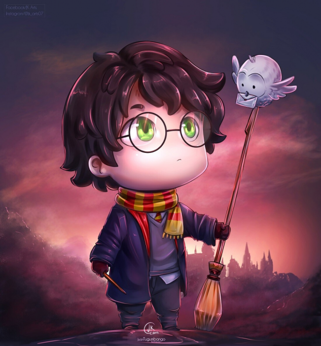
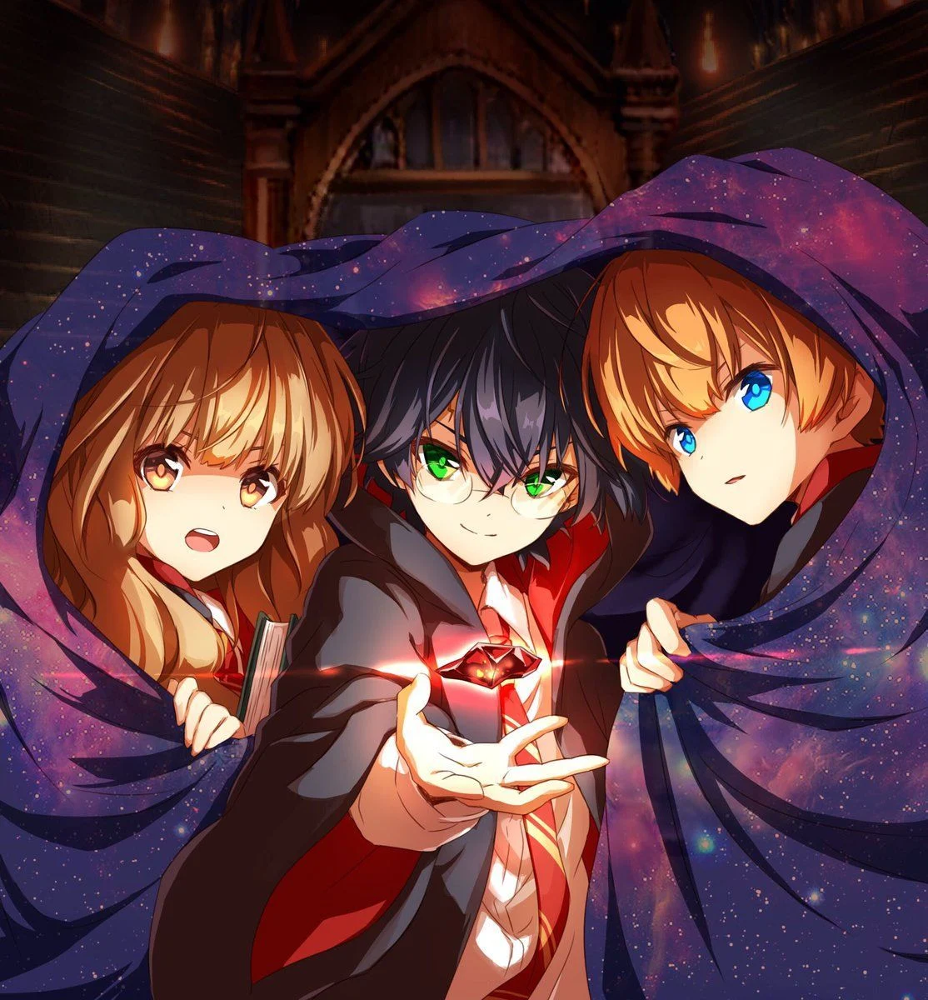

"Dobby is going to buy a sweater next, Harry Potter!" he said happily, pointing at his bare chest,
"Tell you what, Dobby," said Ron, who seemed to have taken a great liking to the elf, "I'll give you the one my
mum knits me this Christmas, I always get one from her. You don't mind maroon, do you?"
Dobby was delighted."Dobby is going to buy a sweater next, Harry Potter!" he said happily, pointing at his bare
chest, "Tell you what, Dobby," said Ron, who seemed to have taken a great liking to the elf, "I'll give you the one my
mum knits me this Christmas, I always get one from her. You don't mind maroon, do you?"
Dobby was delighted."Dobby is going to buy a sweater next, Harry Potter!" he said happily, pointing at his bare
chest, "Tell you what, Dobby," said Ron, who seemed to have taken a great liking to the elf, "I'll give you the one my
mum knits me this Christmas, I always get one from her. You don't mind maroon, do you?"
Dobby was delighted.